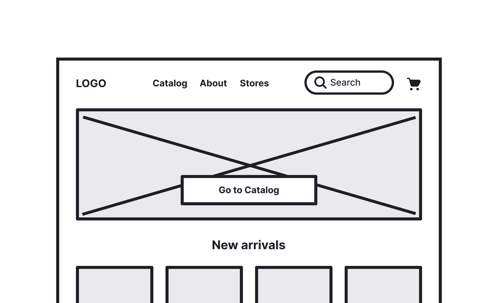
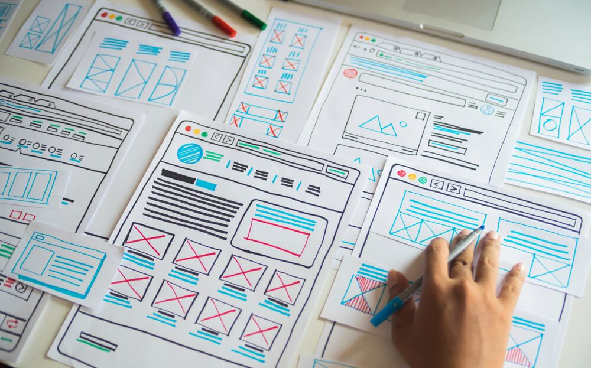

Teoria
Por que planejar antes de programar
Sabe quando você começa a escrever um texto sem saber bem onde quer
chegar? Com site é parecido. Se você abre o editor de código e já
sai digitando tag, corre o risco de retrabalho: mover coisa de
lugar, perceber que esqueceu uma seção, refazer o que já tinha
feito. Planejar antes economiza tempo depois.
O que é um wireframe
Wireframe é um esboço da sua página — só a estrutura, sem cor, sem
fonte bonita, sem imagem final. A ideia é decidir onde cada bloco
vai ficar: topo, menu, banner, conteúdo, rodapé. Pode ser desenhado
à mão, num quadro branco ou em uma ferramenta simples de retângulos,
como no exemplo abaixo.
- Ele responde: o que vem primeiro na tela?
- O que fica em destaque?
- Onde fica o menu, e o que tem dentro dele?

Repare: só estrutura e blocos, nenhuma cor ou imagem final definida
ainda.
Pensando em tela de computador
Existem wireframes para vários tamanhos de tela — celular, tablet,
computador. Na nossa prática de hoje, vamos focar na versão web,
pensando em uma tela de computador: mais larga, com espaço para menu
horizontal no topo, banner grande e conteúdo organizado em colunas.

Esse é o formato que você vai desenhar hoje: tela larga, pensada
para computador.
Ferramentas que ajudam a montar wireframes
Depois que você já entende a lógica no papel, existem ferramentas
digitais que facilitam bastante montar um wireframe — principalmente
quando o projeto cresce e você precisa reorganizar tudo rápido. Vale
conhecer:
-
Figma — a mais usada no mercado hoje, gratuita para uso
individual, com blocos prontos para arrastar.
-
Balsamiq — famosa por simular um desenho à mão, ótima para
wireframes bem no início da ideia.
-
Adobe XD — parecida com o Figma, integrada com outras ferramentas
da Adobe.
-
Canva — mais simples, também tem modelos de wireframe prontos para
usar.
Exemplos de wireframes
Olha só alguns exemplos reais de wireframe, em estilos diferentes —
alguns mais soltos e desenhados à mão, outros já mais organizados em
retângulos digitais. Repare que, em todos, a ideia é a mesma:
mostrar onde cada bloco vai ficar, sem se preocupar com cor ou
visual final.